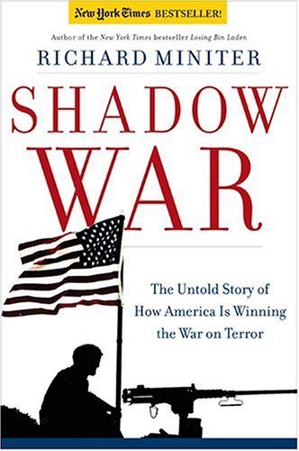
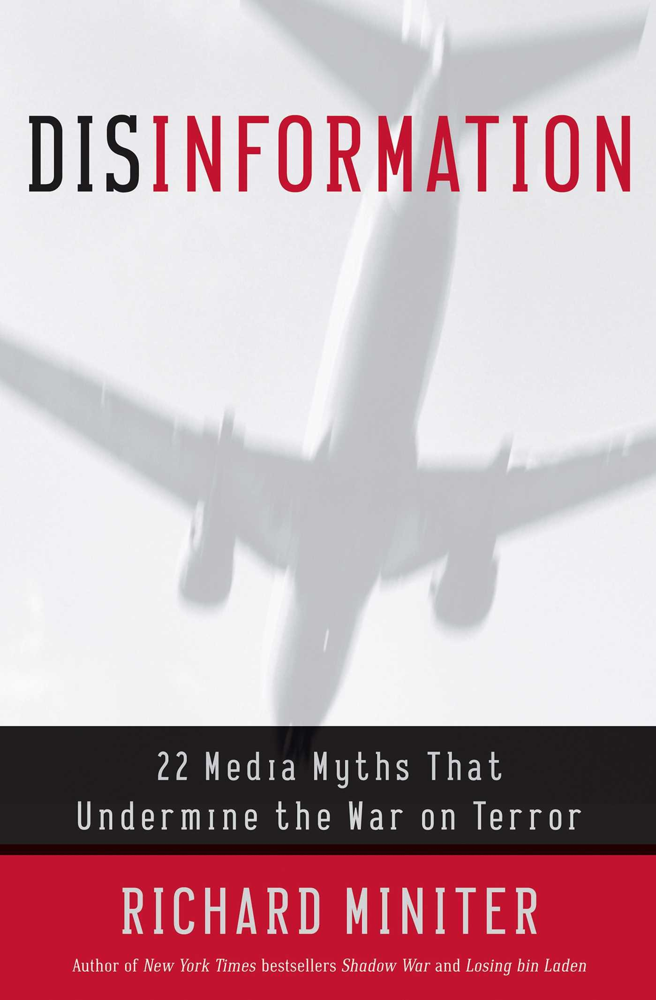

Ver também
-
"Richard Miniter, veterano jornalista investigativo, foi colunista do Wall Street Journal e do Washington Post . Escreveu também no New York Times , que hoje pode não gostar muito do que ele diz mas não pode tirá-lo da sua lista de best-sellers , onde ele está entrando pela terceira vez (as duas anteriores foram com Shadow War: The Untold Story of How Bush Is Winning the War on Terror e Losing Bin Laden: How Bill Clinton's Failures Unleashed Global Terror).
Miniter também reduz a pó dois artigos-de-fé das classes falantes: mostra que Bin Laden não foi treinado pela CIA e que a Halliburton não está ganhando dinheiro no Iraque."
Os iluminados (http://www.olavodecarvalho.org/semana/051107dc.htm)
Mais livros

Richard Miniter